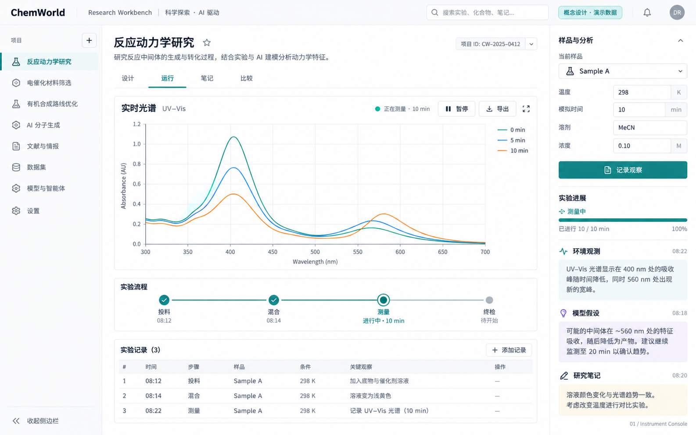
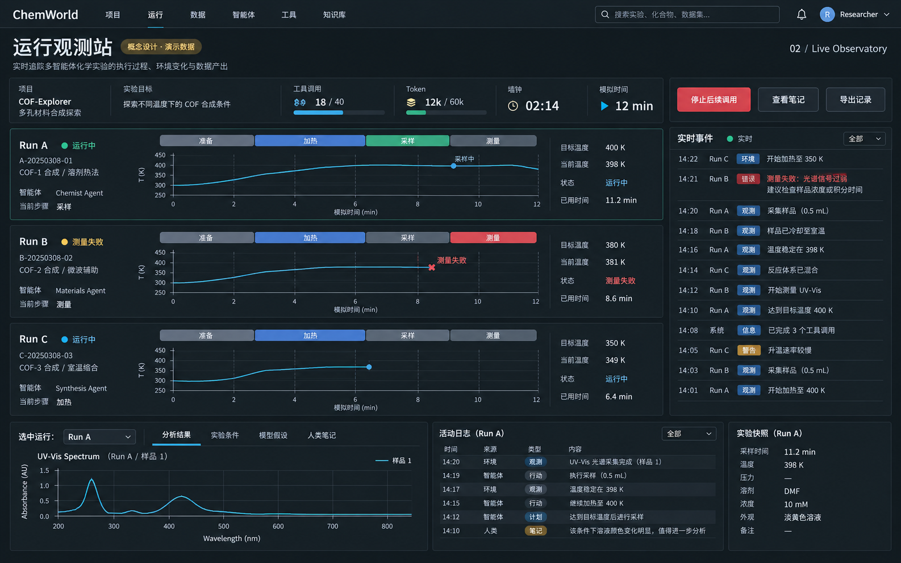
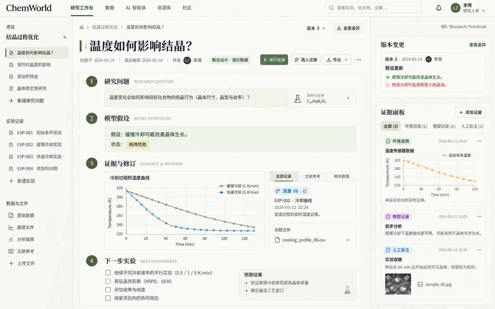
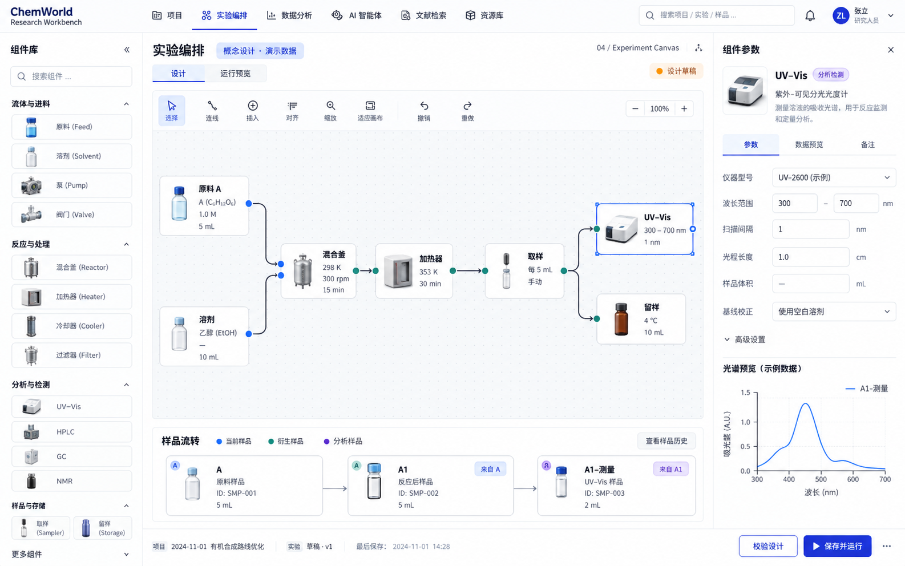
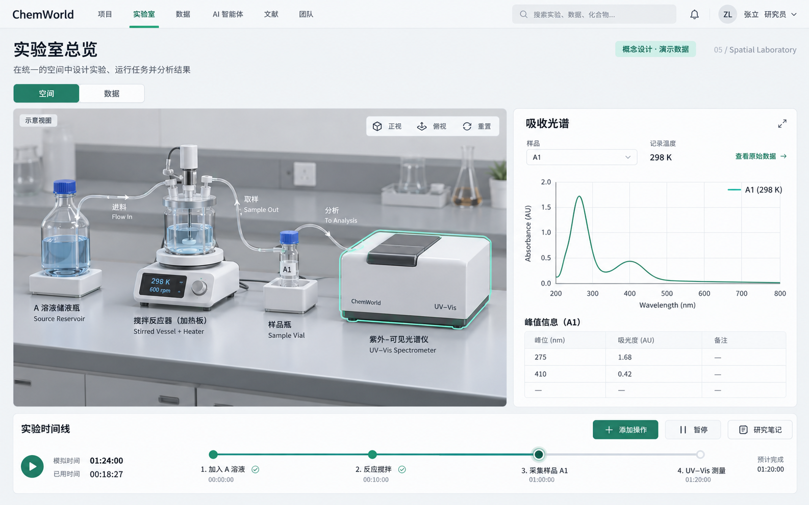
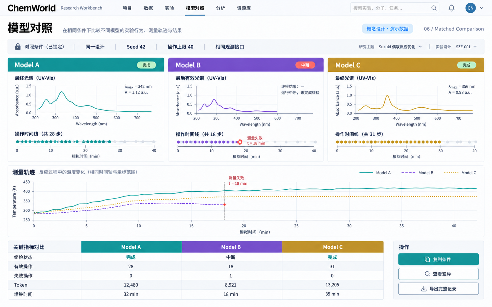
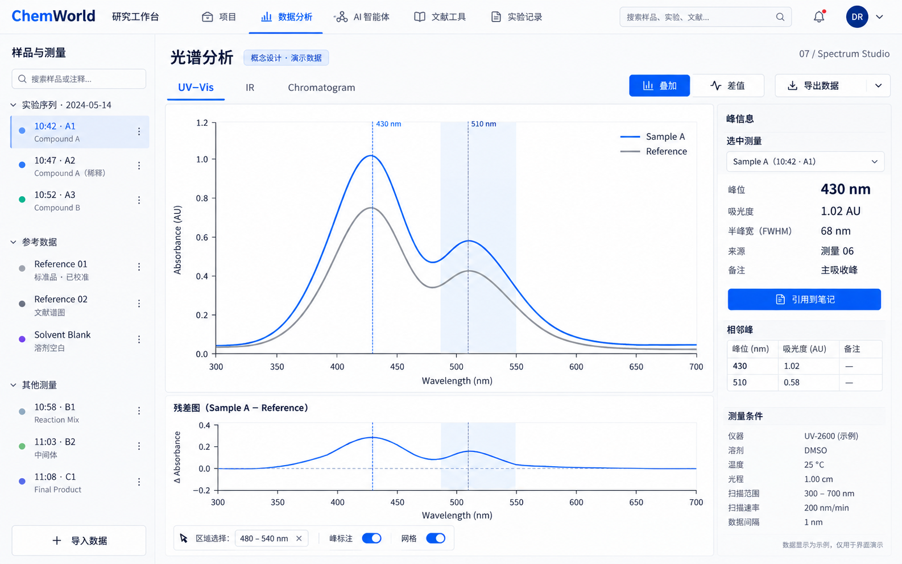
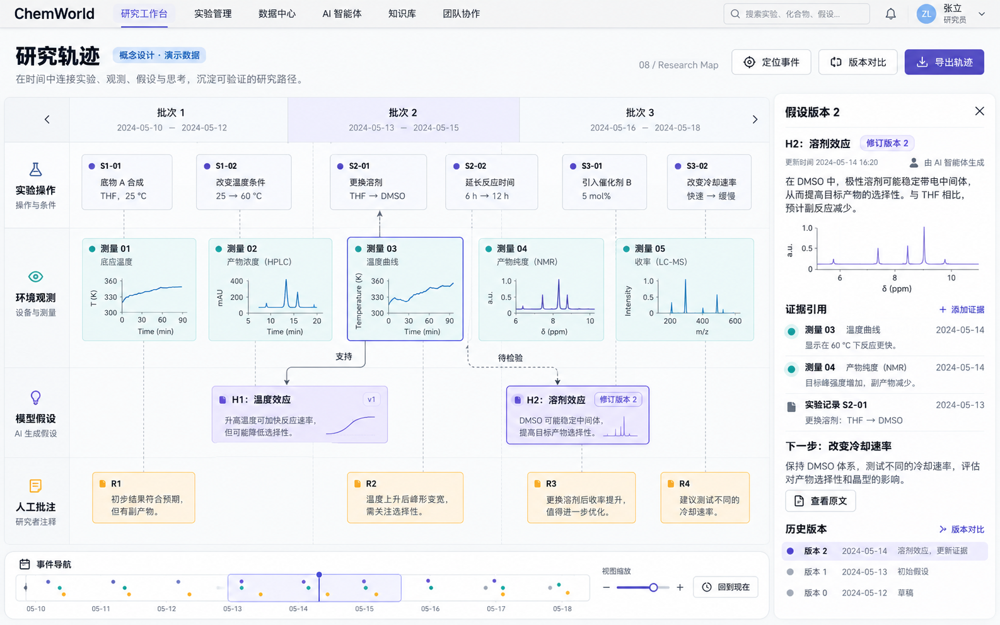
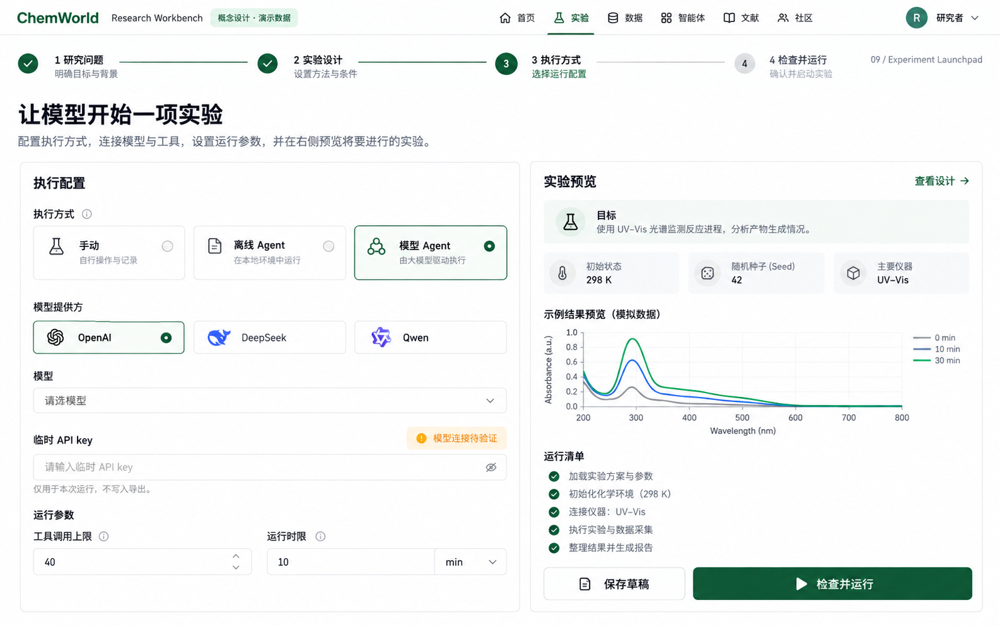
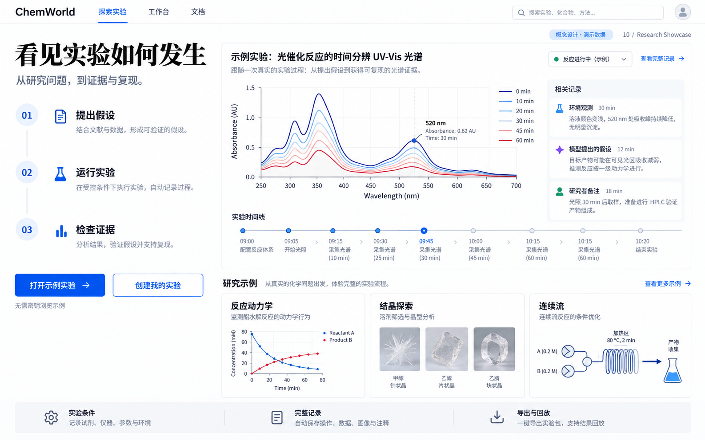

面向研究者与 Agent 开发者，探索实验设计、实时运行、研究记录、模型比较与成果展示。点击图片查看大图，使用左右方向键翻页。这些是 imagegen 生成的设计概念，图中内容均为演示，不代表已实现功能或实验证据。

日常实验与实时观察
适合作为日常工作台的基础。主图足够大，操作与样品详情容易定位；需要裁剪生成图自行添加的导航栏目。

长程 Agent 运行监控
适合同时观察多个长程任务。时间、预算、失败可见；信息密度偏高，需要按任务折叠。

假设、证据与版本化记录
适合持续维护假设和研究报告。来源、版本与证据相邻；作者身份和记录类型需用字段明确。

组件组合与样品流转
适合组合实验与样品流转。连线及来源直观；拖拽编辑、扩展设备清单属于未来功能。

空间理解与设备观察
适合介绍设备与观察空间关系。吸引力强；3D 场景成本较高，只作为辅助示意。

相同条件下比较过程与成本
适合公平查看多模型运行。条件、失败、过程和成本并列；不推导能力排名。

仪器信号与测量历史
适合仔细阅读测量数据。主谱、差值和证据引用清楚；真实图形必须由原始数值绘制。

长程研究轨迹与假设修订
适合跨批次回顾长程研究。事实、假设与人工批注分开；关系线需来自显式引用。

建实验、接模型与临时密钥
适合第一次建实验及接模型。入口和预算直观；启动前的运行清单不能显示为已完成。

社区入口、成果展示与可复现浏览
适合作为社区首页与示例入口。用实验故事引导体验；最终文案要明确哪些为模拟示例。